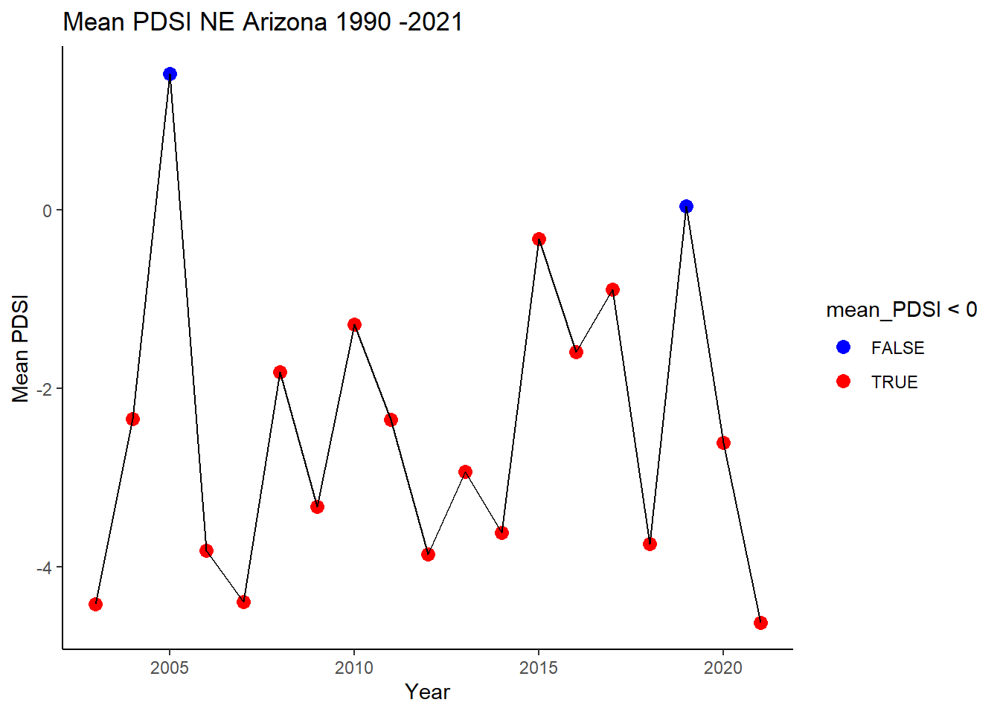

NE_AZ_PDSI = read_csv("data/NE_AZ_PDSI_1895-2021.csv")
NE_AZ_PDSI = NE_AZ_PDSI %>%
mutate(Date = ym(Date))
NE_AZ_PDSI = NE_AZ_PDSI %>%
mutate(year = year(Date),
month = month(Date),
day = day(Date))ISC 6153 Assignment 2
ISC 6153 Assignment 2
Use the online NOAA climate index time series calculator (see link below) to generate a time series of yearly PDSI values for Northeast Arizona for the period of 1895-2021. Export the time series to CSV file in order to provide quantitative answers.
[https://www.ncdc.noaa.gov/cag/divisional/time-series, under divisional]
Formatting
#reads in monthly PDSI values for Northeast Arizona 1895-2021 and formats date times
Questions
(1a) How many months and equivalent years (months/12) did Northeast Arizona experience dry conditions (PDSI < 0) and how many wet conditions (PDSI >0). What is the ratio between dry to wet months?
dry_mons = NE_AZ_PDSI %>%
filter(Value < 0) %>%
nrow()
dry_years = NE_AZ_PDSI %>%
group_by(year) %>%
summarize(count = as.numeric(any(Value < 0))) %>%
summarize(count_of_years = sum(count)) %>%
pull(count_of_years)
wet_mons = NE_AZ_PDSI %>%
filter(Value > 0) %>%
nrow()
wet_years = NE_AZ_PDSI %>%
group_by(year) %>%
summarize(count = as.numeric(any(Value > 0))) %>%
summarize(count_of_years = sum(count)) %>%
pull(count_of_years)
dry_wet_mons_ratio = dry_mons/wet_monsAnswers Q1a
dry_mons[1] 890dry_years[1] 111wet_mons[1] 634wet_years[1] 93dry_wet_mons_ratio[1] 1.403785[10 points]
(1b) How many months and equivalent years did Northeast Arizona experienced severe drought conditions (PDSI < -3) and how many extreme conditions (PDSI < -4)?
severe_mons = NE_AZ_PDSI %>%
filter(Value <= -3) %>%
nrow()
severe_years = NE_AZ_PDSI %>%
group_by(year) %>%
summarize(count = as.numeric(any(Value <= -4))) %>%
summarize(count_of_years = sum(count)) %>%
pull(count_of_years)
extreme_mons = NE_AZ_PDSI %>%
filter(Value <= -4) %>%
nrow()
extreme_years = NE_AZ_PDSI %>%
group_by(year) %>%
summarize(count = as.numeric(any(Value <= -4))) %>%
summarize(count_of_years = sum(count)) %>%
pull(count_of_years)Answers Q1b
severe_mons[1] 273severe_years[1] 31extreme_mons[1] 169extreme_years[1] 31[10 points]
(1c) Since 1990, how many months and equivalent years did Northeast Arizona experience dry conditions (PDSI < 0) and how many wet conditions (PDSI >0). What is the ratio between dry to wet months?
#subset data since 1990
since_1990 = NE_AZ_PDSI %>%
filter(year > 1989)
#calculat
dry_30_mons = since_1990 %>%
filter(Value < 0) %>%
nrow()
dry_30_years = since_1990 %>%
group_by(year) %>%
summarize(count = as.numeric(any(Value < 0))) %>%
summarize(count_of_years = sum(count)) %>%
pull(count_of_years)
wet_30_mons = since_1990 %>%
filter(Value > 0) %>%
nrow()
wet_30_years = since_1990 %>%
group_by(year) %>%
summarize(count = as.numeric(any(Value > 0))) %>%
summarize(count_of_years = sum(count)) %>%
pull(count_of_years)
recent_30_ratio = dry_30_mons/wet_30_monsAnswers Q1c
dry_30_mons[1] 300dry_30_years[1] 31wet_30_mons[1] 84wet_30_years[1] 16recent_30_ratio[1] 3.571429[10 points]
(1d) What does the change in PDSI ratio over the past 30 years represent? Does it reflect drought conditions only in Northeast Arizona? If not, where else have similar drought conditions occurred?
Answer Q1d: The change in PDSI ratio indicates that there are now far more dry months than wet months than there were over the temporal range of these data. It is likely that these drought conditions extend further inland into the interior of the United States considering the dominating weather patterns moving storm systems west to east and it would be logical to assume drought conditions or at least similar seasonal trends occurred in other states. The drought conditions seen in the northeast always probably echo other sections of Arizona during that time and maybe even other states in the southeast.
[10 points]
Differential tree mortality
Differential tree mortality has caused short-term vegetation shift during the years 1995-2003. Use data from Mueller et al.’s paper to answer the following:
Questions
(2a) What was the drought mortality rate (and their uncertainties) of pinyon and juniper during the two severe drought years of 1996 and 2002?
# Create the Mueller_05 dataframe
Mueller_05 <- tibble(
species = c("pinyon", "pinyon", "juniper", "juniper"),
year = c(1996, 2002, 1996, 2002),
mortality = c(25.9, 31.7, 3, 4.5),
stand_dev = c(7.03, 5.44, 1.3, 3.06)
)
# Print the dataframe
print(Mueller_05)# A tibble: 4 × 4
species year mortality stand_dev
<chr> <dbl> <dbl> <dbl>
1 pinyon 1996 25.9 7.03
2 pinyon 2002 31.7 5.44
3 juniper 1996 3 1.3
4 juniper 2002 4.5 3.06[5 points]
(2b) Assuming that in 1995, one of the pinyon-juniper woodland plots had 100 pinyon trees and 100 juniper trees. How many trees of each type remained after the two severe drought years in 1997 and 2003? What is the uncertainty of your estimates?
#expected alive would be the original population - mortality
Mueller_05 = Mueller_05 %>%
mutate(expected_alive = 100-mortality,
variance = stand_dev^2)
#variance is the square of standard deviation
Alive = Mueller_05 %>%
select(species,year,expected_alive, variance)
Alive# A tibble: 4 × 4
species year expected_alive variance
<chr> <dbl> <dbl> <dbl>
1 pinyon 1996 74.1 49.4
2 pinyon 2002 68.3 29.6
3 juniper 1996 97 1.69
4 juniper 2002 95.5 9.36[15 points]
(3a) What was the average Basal Trunk Diameter (BTD) of pinyon trees before and after the two droughts?
BTD_pre_drought = 12.15
sd_pre_drought = 1.31
BTD_post_drought = 10.14
sd_post_drought = 1.30[10 points]
(3b) What is the reason for the observed BTD change?
Answer Q3b: BTD decreased likely due to catastrophic xylem cavitation restricting the basal trunk diameter by roughly 2 cm.
[10 points]
(3c) How many years of non-drought conditions will it take for the pinyon tree population to recover to the pre-1996 BTD conditions? Based on the PDSI values of the post-2002 period, will such a recovery happen? Explain.
Answer Q3b: The 2 cm BTD loss is estimated to be the equivalent of 22-34 years of growth according to the authors. This implies that it would take at least 22 years of PDSI values above 0 to restore remaining living pinyon tress to pre 1996 BTD levels. This is unlikely to occur because we see that since this publication was written dry conditions continue to impact this region.
recently = NE_AZ_PDSI %>%
filter(year > 2002)
recently <- recently %>%
group_by(year) %>%
summarize(mean_PDSI = mean(Value))
# Create the smooth line scatter plot
plot <- ggplot(recently, aes(x = year, y = mean_PDSI)) +
geom_point(aes(color = mean_PDSI < 0), size = 3) + # Add points with size 3
geom_line(color = "black") + # Add smooth line
labs(title = "Mean PDSI NE Arizona 1990 -2021",
x = "Year",
y = "Mean PDSI") +
theme_classic() +
scale_color_manual(values = c("blue", "red")) # Color for points below and above zero
# Print the plot
print(plot)
[10 points]
Ecological impact
(4) How has the differential tree mortality affected the pinyon-juniper woodland environment in Northeast Arizona? List at least three such effects.
Answer Q4:
- Differential tree mortality lead to a vegetation shift in the region to a more Juniper dominated landscape with an age structure shift.
- There was a reduction in avian seed dispersers and reproductive output by the system with heavier drought pressure felt on mature age classes
- The differential mortality will likely alter the above and below ground community assemblages by altering at least avian and ectomycorrhizal fungi.